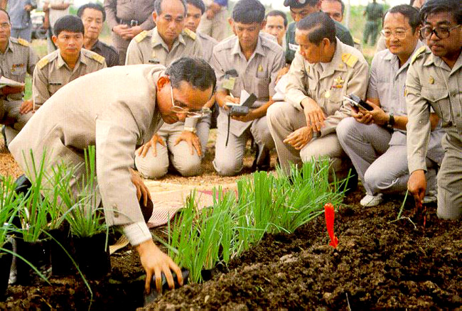

Home
โครงการฝนหลวง
โครงการแกล้งดิน
โครงการแกล้งดิน, โครงการแกล้งดิน

แนวพระราชดำริเกี่ยวกับการเร่งดินให้เป็นกรดจัดรุนแรงที่สุด โดยการทำให้ดินแห้งและเปียกสลับกัน แล้วศึกษาวิธีการปรับปรุงดินโดยการใช้น้ำล้างดิน การใช้หินปูนฝุ่น และใช้ทั้งสองวิธีควบคู่กันไป สามารถปรับปรุงดินเพื่อปลูกพืชในดินเปรี้ยวจัดไว้
“...ด้วยพื้นที่จำนวนมากในจังหวัดนราธิวาสเป็นที่ลุ่มต่ำ มีน้ำขังตลอดปี ดินมีคุณภาพต่ำ ซึ่งพื้นที่ทั้งหมดประมาณ 3 แสนไร่ เกษตรกรจำนวนมากไม่มีที่ทำกิน แม้เมื่อระบายน้ำออกจากพื้นที่หมดแล้ว ยังยากที่จะให้ประโยชน์ทางการเกษตรให้ได้ผลทั้งนี้ เนื่องจากดินมีสารประกอบไพไรท์ ทำให้เกิดกรดกำมะถัน เมื่อดินแห้งทำให้ดินเปรี้ยว ควรปรับปรุงดินให้ดีขึ้น ดังนั้น เห็นสมควรที่จะมีการปรับปรุงพัฒนา โดยให้มีหน่วยงานต่างๆ ที่เกี่ยวข้องเข้ามาดำเนินการศึกษาและพัฒนาพื้นที่พรุร่วมกันแบบผสมผสาน และนำผลสำเร็จของโครงการไปเป็นแบบอย่างในการที่จะพัฒนาพื้นที่ดินพรุในโอกาสต่อไป...”
พระราชดำรัสของพระบาทสมเด็จพระปรมินทรมหาภูมิพลอดุลยเดช บรมนาถบพิตร พระราชทานแก่ หม่อมเจ้าจักรพันธุ์เพ็ญศิริ จักรพันธุ์ องคมนตรี นายสุเมธ ตันติเวชกุล เลขาธิการ กปร.นายชิต นิลพานิช ผู้ว่าราชการจังหวัดนราธิวาส นายเล็ก จินดาสงวน ผู้ช่วยอธิบดีกรมชลประทาน นายอำเภอท้องที่ และข้าราชการที่ เกี่ยวข้องในจังหวัดนราธิวาส พ.ศ. 2524
วันที่ 24 สิงหาคม 2524 พระบาทสมเด็จพระปรมินทรมหาภูมิพลอดุลยเดช บรมนาถบพิตร ทรงมีพระราชดำรัสกับ หม่อมเจ้าจักรพันธุ์เพ็ญศิริ จักรพันธุ์ องคมนตรี นายสุเมธ ตันติเวชกุล เลขาธิการ กปร.นายชิต นิลพานิช ผู้ว่าราชการจังหวัดนราธิวาส นายเล็ก จินดาสงวน ผู้ช่วยอธิบดีกรมชลประทาน นายอำเภอท้องที่ และข้าราชการที่ เกี่ยวข้องในจังหวัดนราธิวาส สรุปความว่า
“…ด้วยพื้นที่จำนวนมากในจังหวัดนราธิวาส เป็นที่ลุ่มต่ำ มีน้ำขังตลอดปี ดินมีคุณภาพต่ำ ซึ่งพื้นที่ ทั้งหมดประมาณสามแสนไร่ เกษตรกรจำนวนมากไม่มีที่ทำกิน แม้เมื่อระบายน้ำออกจากพื้นที่หมดแล้วยังยากที่จะใช้ประโยชน์ทางการเกษตรให้ได้ผล ทั้งนี้ เนื่องจากดินมีสารประกอบไพไรท์ ทำให้มีกรดกำมะถัน เมื่อดินแห้งทำให้ดินเปรี้ยว ควรปรับปรุงดินให้ดีขึ้น ดังนั้น เห็นสมควรที่จะมีการปรับปรุงพัฒนา โดยให้มีหน่วยงานต่าง ๆ ที่เกี่ยวข้องมาดำเนินการศึกษาและพัฒนาพื้นที่พรุร่วมกัน แบบผสมผสานและนำผลสำเร็จของโครงการไปเป็นแบบอย่างในการที่จะพัฒนาพื้นที่ดินพรุในโอกาสต่อไป....”
พระบาทสมเด็จพระปรมินทรมหาภูมิพลอดุลยเดช บรมนาถบพิตร ทรงพระราชทานพระราชดำริ “โครงการแกล้งดิน” โดยให้ศูนย์ศึกษาการพัฒนาพิกุลทองฯ ดำเนินการศึกษา ทดลอง เพื่อปรับปรุงดินเปรี้ยวให้สามารถใช้ประโยชน์ทางการเกษตรได้ ทรงพระราชทานพระราชดำริ ณ ศูนย์ศึกษาการพัฒนาพิกุลทองฯ ความว่า
“...ให้มีการทดลองทำดินให้เปรี้ยวจัด โดยการระบายน้ำให้แห้งและศึกษาการแก้ดินเปรี้ยว เพื่อนำผลไปแก้ปัญหาดินเปรี้ยวให้แก่ราษฎรที่มีปัญหาในเรื่องนี้ ในเขตจังหวัดนราธิวาส โดยให้ทำโครงการศึกษาทดลองในกำหนด 2 ปี และพืชที่ทำการทดลองควรเป็นข้าว...”
พระราชดำริพระบาทสมเด็จพระปรมินทรมหาภูมิพลอดุลยเดช บรมนาถบพิตร ...ให้มีการทดลองทำดินให้เปรี้ยวจัด โดยการระบายน้ำให้แห้ง และศึกษาวิธีการแก้ดินเปรี้ยว เพื่อนำผลไปแก้ปัญหาดินเปรี้ยว ให้แก่ราษฎรที่มีปัญหาในเรื่องนี้ในเขตจังหวัดนราธิวาส โดยให้ทำโครงการศึกษาทดลองในกำหนด 2 ปี และพืชที่ทำการทดลองปลูกควรเป็นข้าว...” วันที่ 16 กันยายน 2527 “...โครงการแกล้งดินนี้เป็นเหตุผลอย่างหนึ่งที่พูดมา 3 ปีแล้วหรือ 4 ปีกว่าแล้ว ต้องการน้ำสำหรับ มาให้ดินทำงาน ดินทำงานแล้วดินจะหายโกรธ อันนี้ไม่มีใครเชื่อ แล้วก็มาทำที่นี่แล้วมันได้ผล ดังนั้น ผลงานของเราที่นี่เป็นงานสำคัญที่สุด เชื่อว่าชาวต่างประเทศเขามาดูเราทำอย่างนี้แล้วเขาพอใจ เขามีปัญหาแล้ว เขาก็ไม่ได้แก้ หาตำราไม่ได้...” วันที่ 5 กันยายน 2535
ผลการทดลอง
การแกล้งดิน เป็นการเร่งทำให้ดินเปรี้ยวเป็นกรดจัดรุนแรงที่สุด จนไม่สามารถปลูกพืช เศรษฐกิจได้ จากนั้นหาวิธีการปรับปรุงดินเปรี้ยวจัดรุนแรงที่สุด ให้สามารถปลูกพืชเศรษฐกิจได้ โดยอาศัยวิธีการต่าง ๆ ดังนี้
1. การปรับปรุงดินเปรี้ยวจัดเพื่อปลูกข้าว
• การใช้น้ำล้างความเป็นกรด ในปีแรกข้าวเจริญเติบโต แต่ให้ผลผลิตต่ำ และผลผลิตเพิ่มขึ้นเรื่อย ๆ ในปีต่อมา ช่วงเวลาของการขังน้ำ และระบายน้ำทิ้งที่เหมาะสมคือ 4 สัปดาห์
• การใส่หินปูนฝุ่น ข้าวเจริญเติบโตและให้ผลผลิตดีกว่า การใส่หินปูนอัตราครึ่งหนึ่งของความต้องการปูน (1.5 ตัน/ไร่) ข้าวให้ผลผลิตเทียบเท่ากับการใส่ปูนเต็มอัตราแนะนำ • การใส่ปูนอัตราต่ำ (ครึ่งหนึ่งของความต้องการปูน) เพื่อสะเทินกรด ควบคู่กับการขังน้ำ แล้วเปลี่ยนน้ำทุก ๆ 4 สัปดาห์ ข้าวจะให้ผลผลิตดีที่สุด
2. การปรับปรุงดินเปรี้ยวจัดเพื่อปลูกพืชไร่ พืชผัก • โดยใส่หินปูนฝุ่นอัตรา 2 ตัน/ไร่ ร่วมกับการใส่ปุ๋ยคอก ปุ๋ยหมัก และปุ๋ยเคมีอัตราแนะนำ
3. การปรับปรุงดินเปรี้ยวจัดเพื่อปลูกไม้ผล • ควรขุดยกร่องเพื่อป้องกันน้ำท่วมและช่วยล้างกรด บนคันดินลงสู่คูด้านล่างควรปรับปรุงดินบริเวณสันร่องก่อน โดยหว่านหินปูนฝุ่นอัตรา 2 ตัน/ไร่ เพื่อสะเทินกรด ก่อนปลูกพืชรองก้นหลุมด้วยปูนขาวหรือหินปูนฝุ่นร่วมกับปุ๋ยหมัก ปุ๋ยคอก ไม้ผลที่ทดลองปลูกได้ผลดี คือ มะพร้าวน้ำหอม ละมุด กระท้อน ชมพู่
4. จากการทดลองปรับปรุงดินแล้วไม่ใช้ประโยชน์ต่อเนื่อง พบว่าดินจะเปรี้ยวจัดรุนแรงอีก
5. ดินเปรี้ยวจัดในสภาพที่ไม่ถูกรบกวน ความเป็นกรดจะเปลี่ยนแปลงอย่างช้า ๆ และพืชพรรณธรรมชาติที่ทนทานความเป็นกรดขึ้นได้หลายชนิด
Privacy
|
Terms
|
FAQs
|
Help
©
MysteryCode
. All Rights Reserved. Designed by
Mystery Code